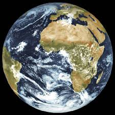

Das Universum
Die
Erde hat einen Durchmesser von etwa **12.742 Kilometern** am Äquator.
Hier einige weitere wichtige Maße:
- **Umfang am Äquator:** ca. 40.075 Kilometer
- **Durchmesser von Pol zu Pol:** ca. 12.714 Kilometer
(etwas kleiner als am Äquator, da die Erde leicht abgeflacht ist)
- **Oberfläche:** etwa 510 Millionen Quadratkilometer
- **Volumen:** rund 1,08 Billionen Kubikkilometer
Diese Größen machen die Erde
zum fünftgrößten Planeten unseres
Sonnensystems und zum einzigen uns
bekannten Planeten mit Leben.🌍

wie alt ist das universum in jahren
Das Universum ist etwa **13,8 Milliarden Jahre** alt.
Diese Zahl basiert auf Messungen der kosmischen
Hintergrundstrahlung und anderen Beobachtungen, die von
Astronomen und Kosmologen mit modernster Technologie, wie
dem Planck-Satelliten, durchgeführt wurden.
Diese Altersbestimmung hilft uns zu verstehen, wie
sich das Universum seit dem Urknall entwickelt hat – von
einem extrem heißen und dichten Zustand zu der komplexen
Struktur aus Galaxien, Sternen und Planeten, die
wir heute beobachten können.
gibt es Aliens?
Es gibt bisher keinen direkten
Beweis für außerirdisches
Leben, aber wegen der enormen
Größe des Universums und
der Entdeckung vieler potenziell
lebensfreundlicher Planeten
halten Wissenschaftler die Existenz
von Aliens für möglich. Leben kann
auch unter extremen Bedingungen
existieren, was die Chancen
erhöht. Programme wie SETI suchen
nach Signalen, haben aber noch
nichts gefunden. Die Suche nach
außerirdischem Leben ist also
offen und spannend.
Was ist eine Supernova?
Eine Supernova ist die gewaltige
Explosion eines Sterns am Ende
seines Lebens. Es gibt zwei
Haupttypen: Kernkollaps-Supernovae
bei sehr massereichen Sternen und
thermonukleare Supernovae bei Weißen
Zwergen in Doppelsternsystemen.
Dabei werden schwere Elemente
ins All geschleudert, die später
neue Sterne und Planeten bilden
können. Nach der Explosion bleibt
oft ein Neutronenstern oder Schwarzes
Loch zurück. Supernovae sind wichtige
Bausteine im kosmischen Kreislauf.
Die Sonne ist das Herzstück unseres Sonnensystems
und ein echtes Kraftpaket der Superlative. Ihre
Ausmaße sind kaum vorstellbar: Mit einem Durchmesser, der
rund 109-mal so groß wie der der Erde ist, nimmt
sie fast den gesamten Raum unseres Systems ein.
Man müsste über eine Million Erden in ihr Inneres
packen, um sie auszufüllen.
Auch bei den Temperaturen bricht sie alle Rekorde
Während es an der sichtbaren Oberfläche bereits glühende
5.500 Grad Celsius heiß ist, brodelt im Inneren das eigentliche
Kraftwerk: Im Kern herrschen unvorstellbare 15 Millionen
Grad Celsius. Diese gewaltige Hitze und Größe machen die
Sonne zu unserem wichtigsten Energiespender, ohne den Leben
auf der Erde niemals möglich wäre.
Wen du Die Sendung mit der Maus Mit erleben
möchtst dann
klick hier